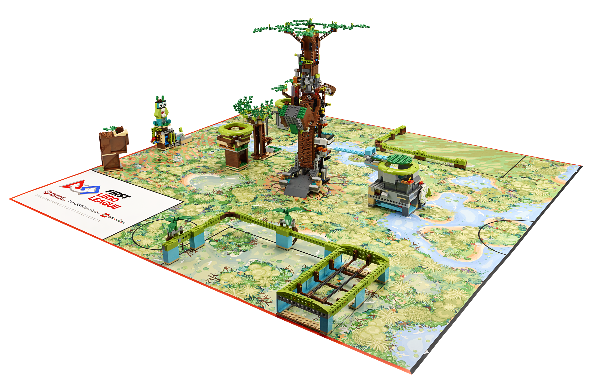

Temporada 2026/2027
BIOGLOW™
Edition
Uma nova temporada para construir, programar e resolver desafios em equipa.
Conhecer as modalidadesO desafio ganha forma
Das ideias
à ação.
O campo de jogo dá vida à temporada. Através da construção e da programação, as equipas exploram soluções e põem à prova aquilo que aprenderam.
As atividades e os materiais variam consoante a modalidade de participação. Consulte as opções e o equipamento necessário para a sua escola.
Consultar materiais e custos
Data-limite de pré-inscrição.
Limite de participação na primeira edição em Portugal.
Final Nacional, com acesso para todas as equipas participantes.
Confirmação da inscrição até 15 de novembro de 2026 · Formação a partir de 15 de novembro de 2026 · Trabalho em equipa até 28 de fevereiro de 2027.
Conheça a Future Edition
Veja o que vem aí.
Descubra a Future Edition no vídeo de apresentação.
Explorar as modalidades de participaçãoProntos para o desafio?
Reúna a equipa e dê o primeiro passo para a temporada 2026/2027.